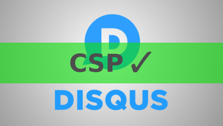
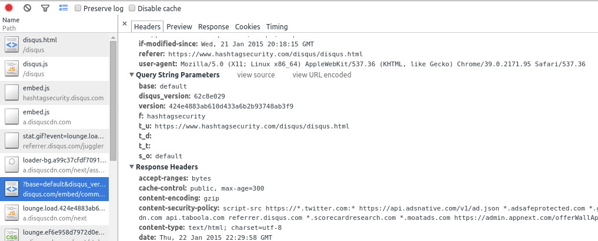

CSP and Disqus are buddies!

After all that trouble I had with Disqus and my Content-Security-Policy, I finally got it working. Not only that, but I got some help from a Disqus JS dev!
First of all, I want to apoligize for a few things in my last post. I blamed Disqus for using eval, when it was really me who, unknowingly, invoked it by using the jQuery load() function.
I also said that Disqus is not compatible with CSP at all - which is not really true.
Thanks to Burak Yiğit Kaya, a javascript developer at Disqus who reached out to me via Twitter, I now know more about how Disqus and CSP work together.
And I want to thank Burak and Disqus for their reaction to my post.
Burak contacted me, not to tell me that I was wrong, but to try and understand what the problem was in order to fix it.
We take security quite seriously and also respect users treating it highly so I'll do my best to make this easier for you.
And he did! Which is awesome, because I have heard this one so many times already, and it's very rare that there's more behind it then just PR.
But back to the technical stuff. After some back and forth with Burak, I finally got a working CSP which looks like this.
Content-Security-Policy: default-src 'self'; script-src 'self' a.disquscdn.com/embed.js hashtagsecurity.disqus.com code.jquery.com; img-src 'self' referrer.disqus.com/juggler/stat.gif a.disquscdn.com/next/assets/img/; frame-src 'self' disqus.com/embed/comments/; style-src 'self' 'unsafe-inline' a.disquscdn.com;
unsafe-inline
This CSP still contains the unsafe-inline option for style sources, which is not really a good thing. Burak told me that I can ignore it, as it's doing is making the loading logo spin.
While I can absolute go without the spinning logo, there is another problem here. Ignoring CSP violations, even if there just a spinning icon, will at some point have a negative impact on your CSP logs if you have them enabled.
So it works, but it's still not perfect.
Too many sources
The other thing that would need improvement is the amount of different sources. Burak explained, that they use a.disquscdn.com as a cookieless domain, and refferer.disqus.com as a stat beacon to check if the load was successfull. As I said to him before, this is just a nice to have. It would increase maintainability of CSPs but it's not absolutely necessary.
Burak came up with the idea, to unify the sources under two domains.
a.disquscdn.com and some-subdomain.disqus.com
Disqus CSP
Something I didn't know before, is that Disqus ships with it's own Content-Security-Policy. As Burak told me, if you load Disqus and take a look at the response headers of the discus.com/embed/comments request, you can see a custom CSP is being set.

content-security-policy:script-src https://*.twitter.com:* https://api.adsnative.com/v1/ad.json *.adsafeprotected.com *.google-analytics.com https://glitter-services.disqus.com https://*.services.disqus.com:* disqus.com http://*.twitter.com:* a.disquscdn.com api.taboola.com referrer.disqus.com *.scorecardresearch.com *.moatads.com https://admin.appnext.com/offerWallApi.aspx 'unsafe-eval' https://mobile.adnxs.com/mob *.services.disqus.com:*
For me this is just show even more that Disqus actually cares about security. Otherwise, they wouldn't have bothered to limit the sources in the first place.
Summary
So, Disqus is back on hashtagsecurity.com. And now it's not just a convenient comment system anymore. I actually have an opinion about it now.
The conversation between Burak and me brought a few things to light that could be improved, and Burak said he will look into it. Although he couldn't make any promises, I'm looking forward to see these improvements go live in the future.
- Move inline CSS into an external file to remove
unsafe-inlinestyle source - Unify sources under
a.disquscdn.comandsome-subdomain.disqus.com
And something we didn't talk about, which I noticed later. The Disqus homepage only shows how to implement Disqus inline. Another option showing how to do it CSP compatible would be a great addition, especially for people just getting started with this kind of thing.
Wait, so what with the eval problem?
Oh yeah, I almost forgot to mention that. The eval problem only occured, because I don't want Disqus to be loaded automatically. Instead I want visitors to click on the big blue bar below the article whenever they want to leave a comment.
The way I did this was by loading Disqus via jQuerys load() function. Which seems to use the eval() function internally.
After playing with both jQuery and plain old JS for a bit, I finally found this [nifty little helper}(http://internet-inspired.com/wrote/load-disqus-on-demand/) which works like a charm. So kudos to @nternetinspired for solving this problem way before me!